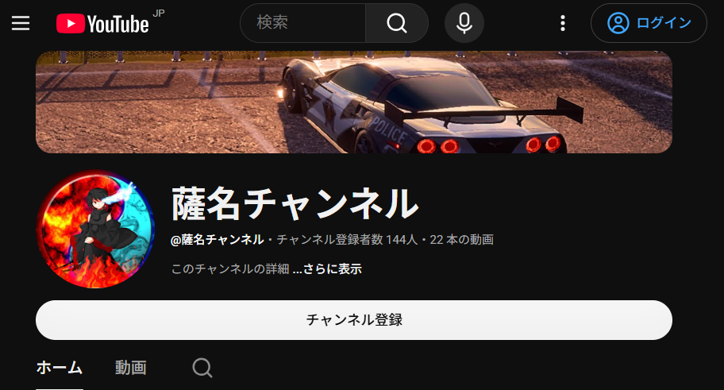

まず初めに自分の名前は薩名(さつな)です。
現在youtubeで活動しているチャンネルが下の画像です、よろしければチャンネル登録お願いします‼
ここをタップすればチャンネルに飛びます

ここでは趣味を紹介します。
自分の趣味は3っあります。
簡単に言いますと
っとあります
詳しくは続きを読んでください。
なんで好きかって言われると詳しくは話せないのですが、とにかく動くのが楽しいからしてます！
登校中やBGM合わせ、動画制作時の合わせ、そして癒しの時間、こんな感じで聞きいてます！
下のURLを張っておきましたので、ぜひ聞いてみてください！
| 月曜日 | 授業 | |
|---|---|---|
| 火曜日 | 授業 | 60分の動画編集 |
| 水曜日 | 授業 | 配信 |
| 木曜日 | 授業 | |
| 金曜日 | 授業 | 動画編集 |
| 土曜日 | 出来たら配信 | 動画編集 |
| 日曜日 | 出来たら配信 | 動画編集 |